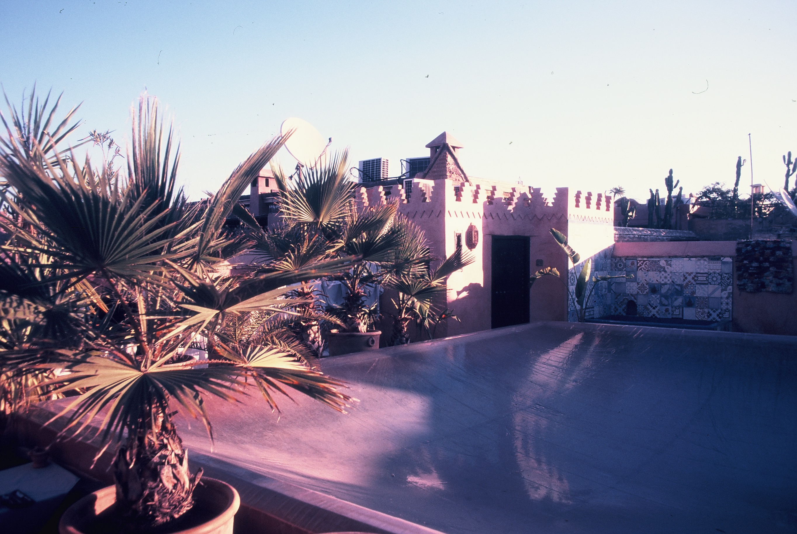
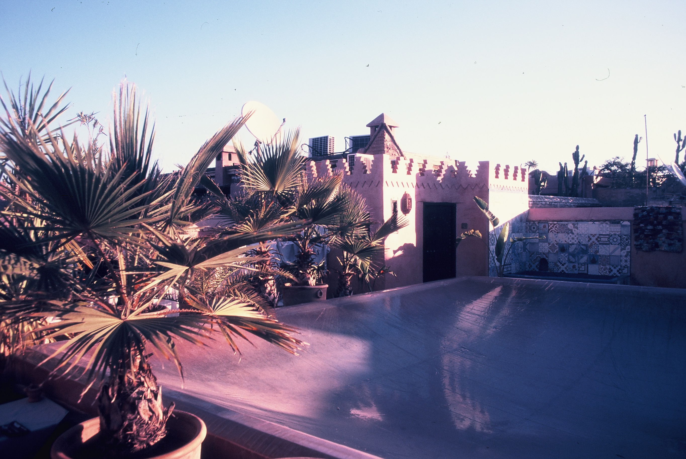

Marakech
Navnet Marrakech er amzigh, og betyr «Guds land». Marrakech er Marokkos fjerde største by, etter Casablanca, Rabat og Fez. Marrakech er en av verdens mest myteomspunne byer, med rosaskimrende bymurer, trange smug, verdens mest spennende og labyrintaktige basarområde og et torg som sannsynligvis har verdensrekord i kaos. Men Marrakech har også en moderne side med fine hotell, trendy butikker med mote og innredning og herlige lounger og restauranter som overrasker mange, både på grunn av den høye kvaliteten på maten og de lave prisene. Det er en by du aldri kan kjede deg i og et ekte shoppingeldorado. La deg forføre av berberkultur og marokkansk gjestfrihet i den marokanske storbyen.
 
